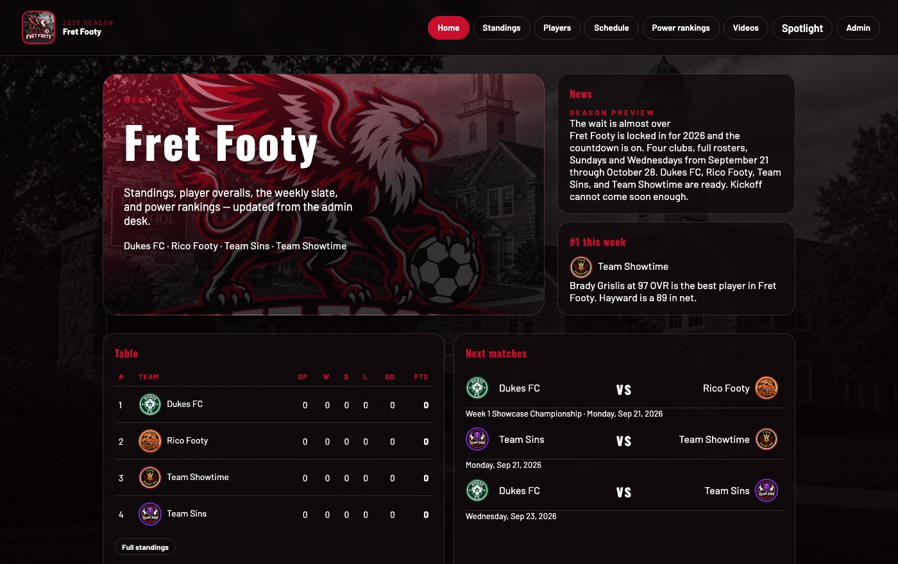
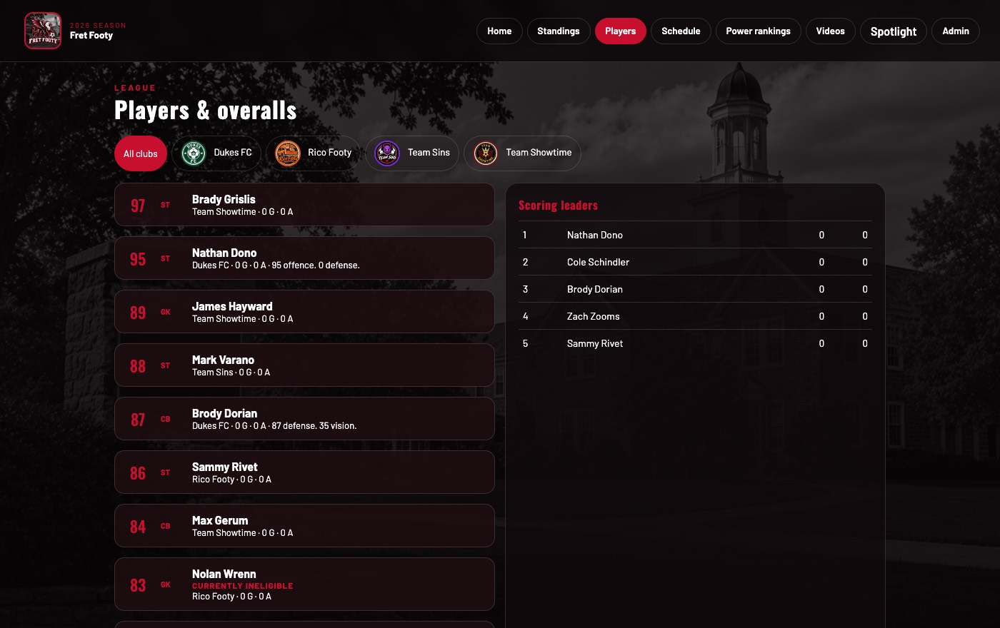
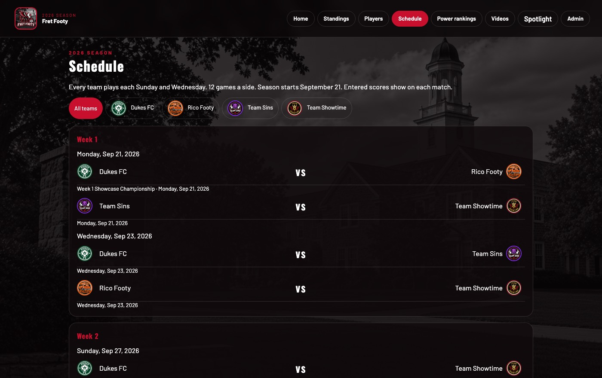
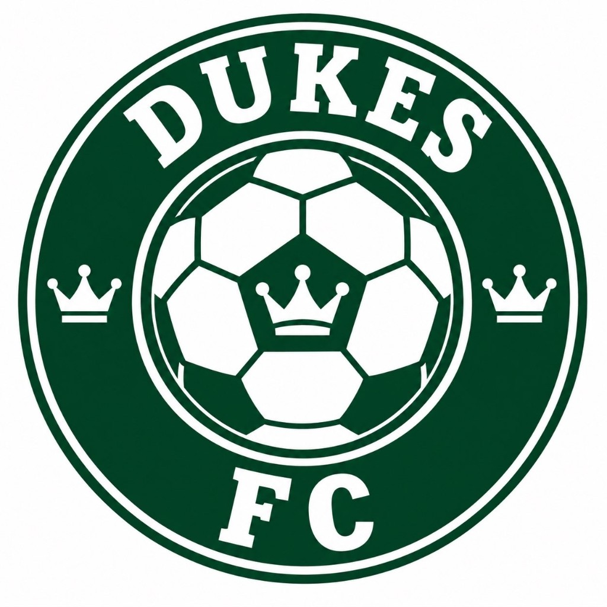
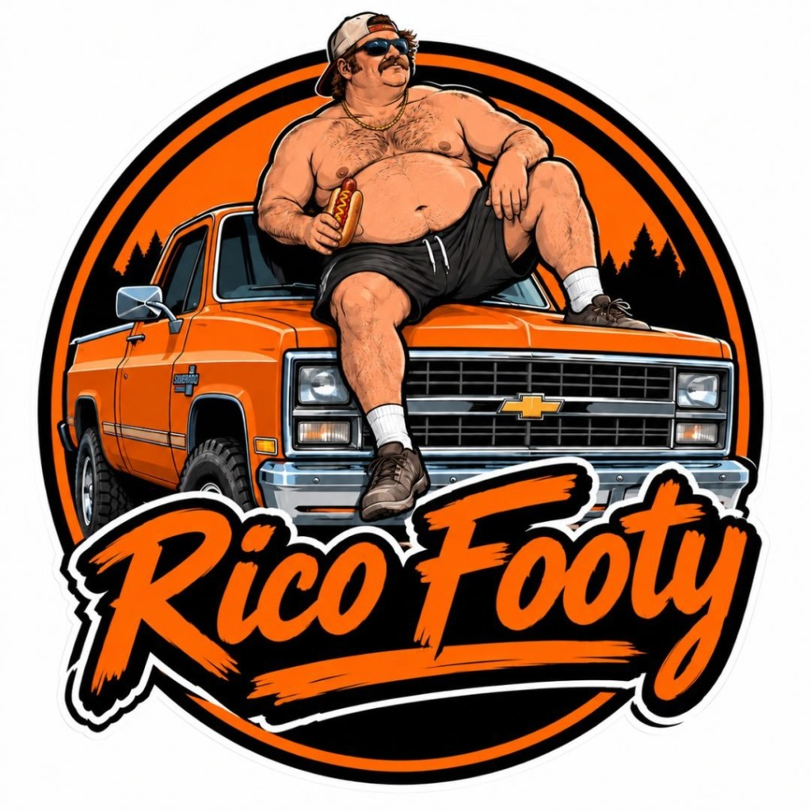

PROJECT SPEC · 2026 SEASON
League homeFret Footy
The official site for a four-club school soccer league: Dukes FC, Rico Footy, Team Sins, and Team Showtime. Sundays and Wednesdays, September 21 through October 28.



What it does
- Standings, sorted by points and goal difference.
- Player overalls, with a filter for each club.
- The full slate. A saved score shows on the match.
- Each club’s own schedule, record, and results.
- Weekly power rankings, news, and film.
- One admin desk updates the public site.
The clubs
Team Showtime
Brady Grislis, 97, leads the league. James Hayward, 89, is in goal.

Dukes FC Nathan Dono, 95, leads the attack. Zach Zooms is in goal.
Rico Footy Sammy Rivet leads the line. Colby Goldstein supplies the assists.
Team Sins
Mark Varano, 88, leads the attack. Brett Daniels is in goal.
Season lines
| Player | Club | Line |
|---|---|---|
| Brady Grislis | Team Showtime | 4 goals, 1 assist |
| Nathan Dono | Dukes FC | 3 goals |
| James Hayward | Team Showtime | 1 goal against, .985 save percentage |
| Colby Goldstein | Rico Footy | 3 assists, 17 hits |
| Brody Dorian | Dukes FC | 1 goal, 1 assist |
| Sammy Rivet | Rico Footy | 1 goal, 1 assist |
Fret Footy · official league site · 2026 season